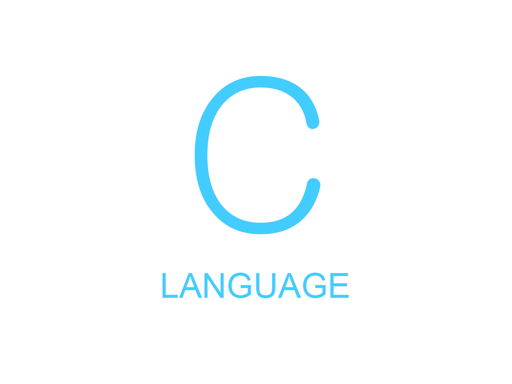

프로그래밍 언어 소개

1972년에 벨 연구소(Bell Labs)의 데니스 리치가 만든 범용(general-purpose) 프로그래밍 언어.
원래 명칭은 그냥 'C'지만 한국에서는 표제어에서도 볼 수 있듯 'C언어'라는 명칭으로 주로 부른다.
영미권에서도 Clang이라고 부르는 사례가 있다.
세계적으로 많이 쓰이는 프로그래밍 언어 중 하나이다.
C언어의 정신은 C99 Rationale에서 다음과 같이 묘사하고 있다.
- 프로그래머를 믿어라. (Trust the programmer)
- 프로그래머가 작업을 못하게 방해하지 마라. (Don't prevent the programmer from doing what needs to be done)
- 언어를 작고 간단하게 유지하라. (Keep the language small and simple)
- 명령을 실행하는 방법을 하나만 제공하라. (Provide only one way to do an operation)
- 호환성은 장담할 수 없더라도 빨리 작동하게 만들어라. (Make it fast, even if it is not guaranteed to be portable)
C에 관한 더 많은 정보는 여기서 확인
다른 언어도 확인해 보세요.